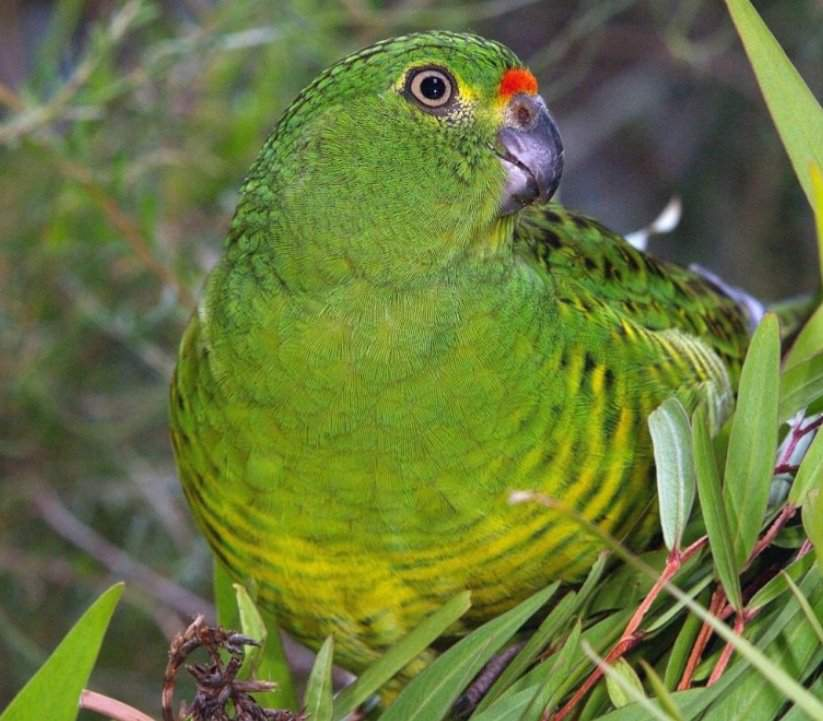

Земляной папугай
Селятся в болотистых местах и песчаных бесплодных участках. Живут поодиночке и парами. Очень ловко бегают в траве, а летают довольно плохо, только в случае опасности, когда не могут убежать. Пролететь этот попугай может не более 200 м, опускаясь вниз, он не парит, как бы падает на землю, касаясь её грудью. Его полёт похож на полёт курообразных птиц.